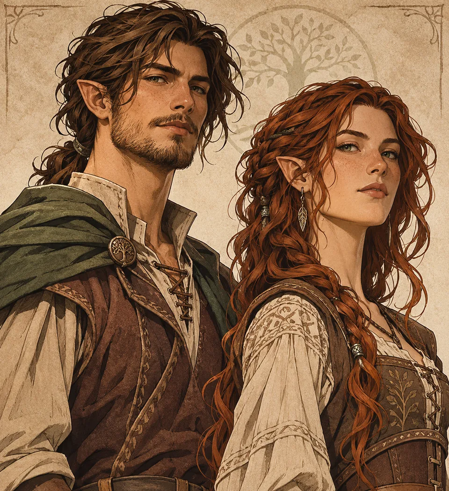

I mezz'elfi
Gazzettino delle Stirpi · Versione 1.0

«Quando due stirpi si incontrano nella violenza, la ferita può segnare generazioni.»
Una frattura tra due mondi
«Quando due stirpi si incontrano nella violenza, la ferita può segnare generazioni.» L'appellativo dispregiativo «Figli della Vergogna» viene usato anche dagli Elfi, oltre che dai Noren, per indicare i mezz'elfi. Esprime il pregiudizio di entrambe le stirpi, non una colpa di chi nasce. I mezz'elfi non sono un popolo indipendente: ogni individuo cerca il proprio posto tra le persone che lo circondano. Come gli altri Figli della Vergogna, sono rari su Ellan; fanno eccezione soltanto i mezz'uomini, decisamente più diffusi. Questa rarità è un dato demografico, non una qualità morale o una limitazione delle possibilità del singolo.
Nascita e origini
I mezz'elfi nascono sempre da violenze sessuali perpetrate da uomini noren contro donne elfe. L'odio degli Elfi verso i Noren è universale: né le donne elfe desiderano uomini noren, né gli uomini elfi desiderano donne noren. Gli uomini noren possono invece provare forte attrazione per le donne elfe. Non esistono quindi unioni consensuali tra le due stirpi. Le circostanze della nascita non costituiscono in alcun modo una colpa per i mezz'elfi. Le madri elfe non prendono mai in considerazione l'aborto, per un profondo rispetto verso il figlio o la figlia. Questo non significa che desiderino crescerli o incontrarli: le madri che non intendono crescerli li affidano segretamente a famiglie noren che desiderano figli ma non possono averne. Le donne elfe riescono istintivamente a trovare queste famiglie e ad affidare loro i bambini, senza lasciarli al caso. Non volerli crescere o vedere non equivale a odiarli.
Aspetto e caratteristiche fisiche
I mezz'elfi presentano un aspetto riconoscibile, con lineamenti delicati e armoniosi, occhi intensi e orecchie appuntite, molto meno lunghe e pronunciate di quelle degli Elfi. La statura e le proporzioni sono intermedie tra quelle di Noren ed Elfi; la corporatura è generalmente più snella rispetto a quella noren. I capelli possono essere lisci, mossi o ricci e avere i colori ammessi nelle due stirpi di origine, anche tonalità insolite come il verdastro. I maschi possono avere barba e baffi, di solito meno folti dei Noren. La peluria sul corpo è scarsa sia nei maschi sia nelle femmine.
Durata della vita e discendenza
L'aspettativa di vita è paragonabile a quella dei Noren, benché i mezz'elfi conservino più a lungo un aspetto giovanile. Come tutti i Figli della Vergogna sono sterili e non possono avere discendenza biologica.
Crescere tra i Noren
La bellezza e i tratti elfici possono destare fascino e curiosità nella società noren. L'ammirazione per l'aspetto non implica però piena accettazione: quando un mezz'elfo tenta di integrarsi, può incontrare sospetto, pregiudizi ed emarginazione. L'esperienza concreta cambia secondo le persone e i luoghi.
Il difficile rapporto con gli Elfi
I clan elfici in genere non accolgono i mezz'elfi e li definiscono anch'essi «Figli della Vergogna», richiamando il trauma della violenza e l'ostilità verso i Noren. Il rifiuto di accoglierli, così come l'uso dell'appellativo, non equivale necessariamente a odiarli: la distinzione tra dolore per le circostanze della nascita e sentimento verso il figlio è essenziale. Nessuna colpa appartiene ai bambini. Tra i mezz'elfi non esiste un sentimento comune verso le proprie origini: alcuni desiderano conoscerle, altri ne sono indifferenti, altri provano rabbia o risentimento. Sono esperienze individuali, non un destino condiviso.
Nessuna cultura separata
I mezz'elfi non hanno lingua, costumi, religione, comunità o tradizioni comuni. Crescono nel mondo dei propri familiari e delle persone che li accolgono; da quell'ambiente apprendono lingua, usanze, valori e credenze. La loro identità culturale è quella del luogo in cui vivono e crescono: si adattano, senza formare una nuova razza o un popolo a sé.
Mana e apprendimento
L'ascendenza elfica non conferisce vantaggi magici, poteri innati o una sensibilità al Mana maggiore rispetto ai Noren. Le opportunità di apprendere la magia sono le medesime.
Gli sguardi degli altri
I Noren possono vederli come curiosità, individui da compatire o persone da respingere; gli Elfi provano spesso disagio; alcuni Feris mostrano empatia; i Nani tendono a valutarli dalle azioni; gli Weishtar attribuiscono meno importanza all'idea di purezza del sangue. Sono tendenze culturali, non giudizi universali validi per ogni persona.
Una vita propria
I mezz'elfi possono diventare viaggiatori, artisti, studiosi, diplomatici, avventurieri o seguire qualunque strada sia loro accessibile. Nessuna professione e nessun temperamento appartiene per natura ai mezz'elfi. Alcuni cercano una casa da chiamare propria; altri la trovano dove sono cresciuti. La loro storia non è scritta dalla loro origine.